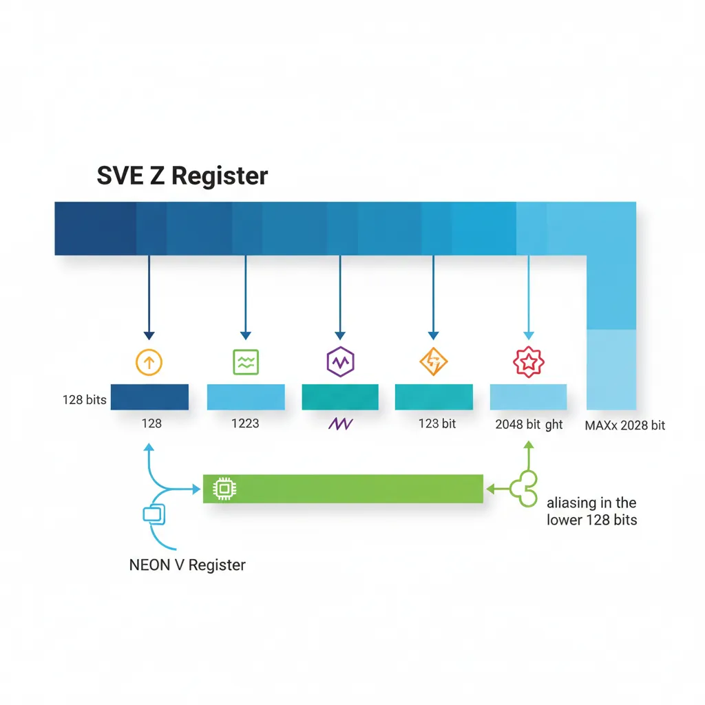
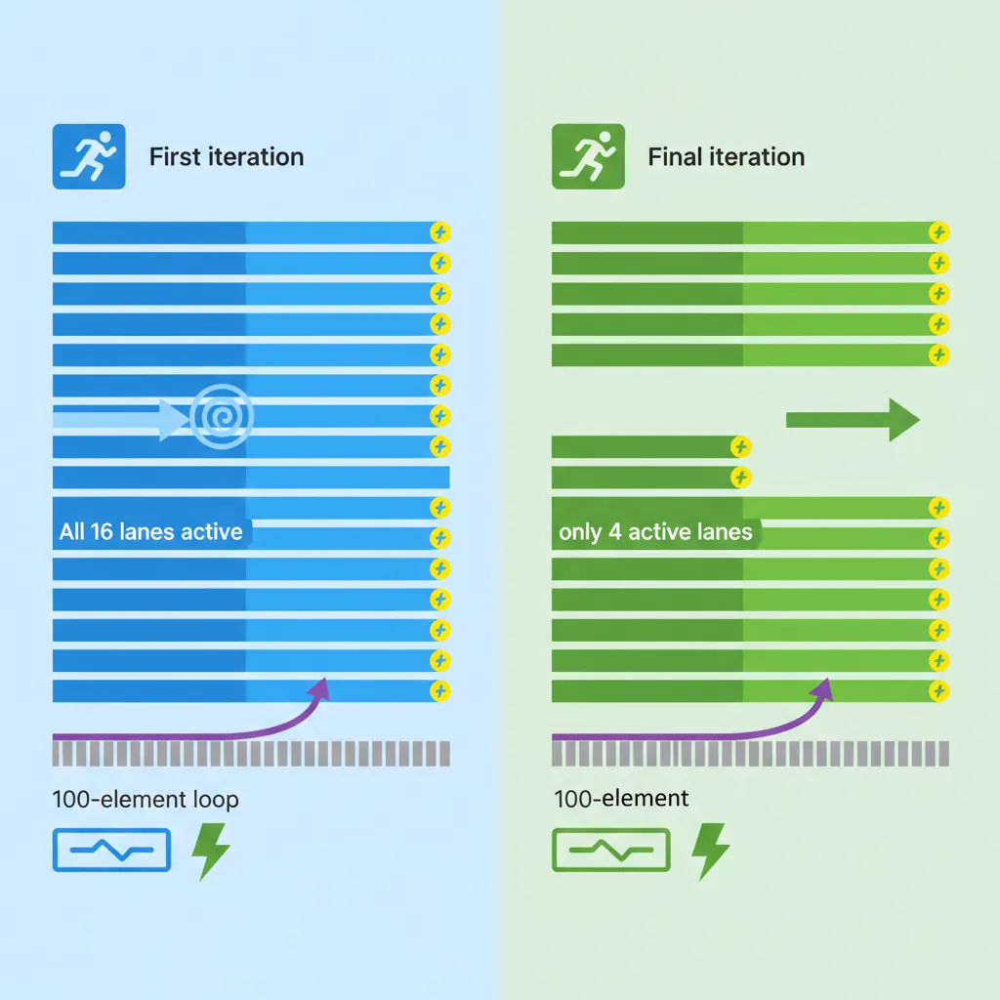
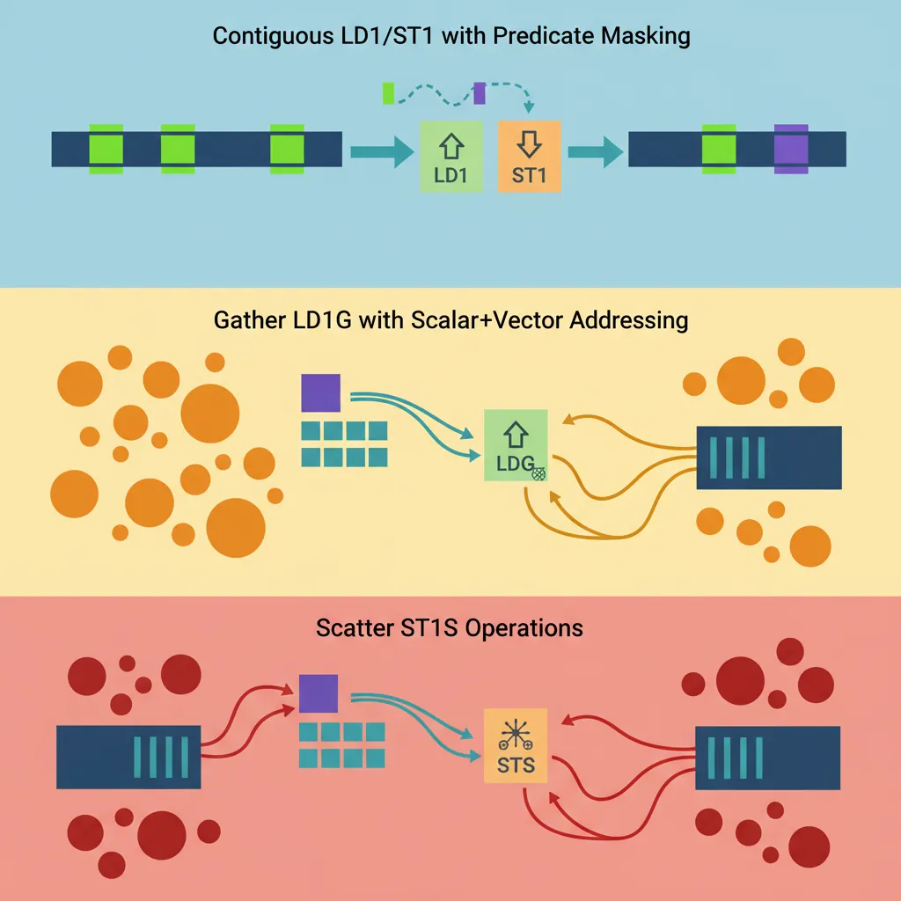
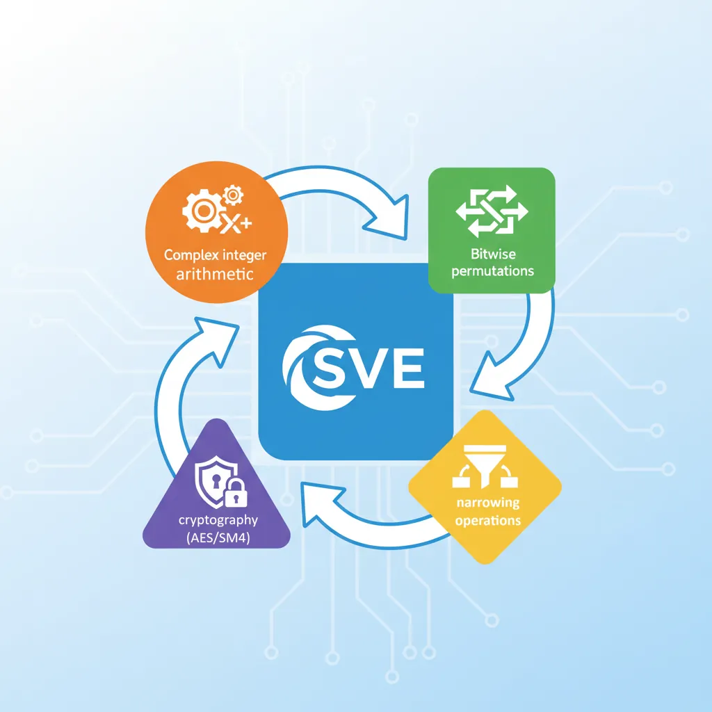
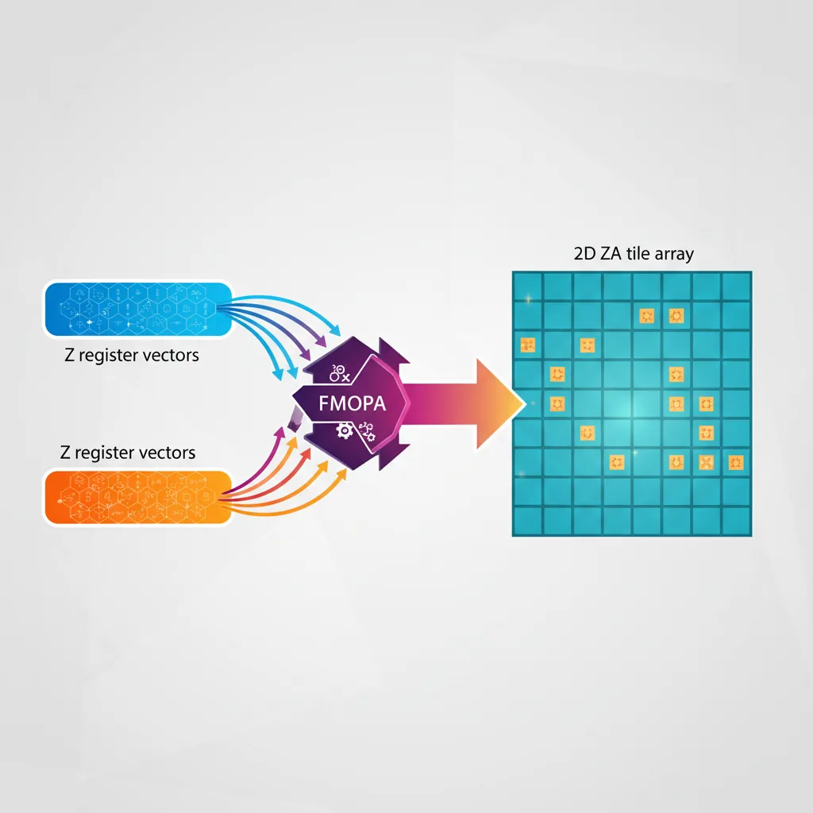

Introduction & SVE Design Goals
ARM Assembly Mastery
Architecture History & Core Concepts
ARMv1→v9, RISC philosophy, profilesARM32 Instruction Set Fundamentals
ARM vs Thumb, registers, CPSR, barrel shifterAArch64 Registers, Addressing & Data Movement
X/W regs, addressing modes, load/store pairsArithmetic, Logic & Bit Manipulation
ADD/SUB, bitfield extract/insert, CLZBranching, Loops & Conditional Execution
Branch types, link register, jump tablesStack, Subroutines & AAPCS
Calling conventions, prologue/epilogueMemory Model, Caches & Barriers
Weak ordering, DMB/DSB/ISB, TLBNEON & Advanced SIMD
Vector ops, intrinsics, media processingSVE & SVE2 Scalable Vector Extensions
Predicate regs, gather/scatter, HPC/MLFloating-Point & VFP Instructions
IEEE-754, scalar FP, rounding modesException Levels, Interrupts & Vector Tables
EL0–EL3, GIC, fault debuggingMMU, Page Tables & Virtual Memory
Stage-1 translation, permissions, huge pagesTrustZone & ARM Security Extensions
Secure monitor, world switching, TF-ACortex-M Assembly & Bare-Metal Embedded
NVIC, SysTick, linker scripts, low-powerCortex-A System Programming & Boot
EL3→EL1 transitions, MMU setup, PSCIApple Silicon & macOS ABI
ARM64e PAC, Mach-O, dyld, perf countersInline Assembly, GCC/Clang & C Interop
Constraints, clobbers, compiler interactionPerformance Profiling & Micro-Optimization
Pipeline hazards, PMU, benchmarkingReverse Engineering & ARM Binary Analysis
ELF, disassembly, CFR, iOS/Android quirksBuilding a Bare-Metal OS Kernel
Bootloader, UART, scheduler, context switchARM Microarchitecture Deep Dive
OOO pipelines, reorder buffers, branch predictVirtualization Extensions
EL2 hypervisor, stage-2 translation, KVMDebugging & Tooling Ecosystem
GDB, OpenOCD/JTAG, ETM/ITM, QEMULinkers, Loaders & Binary Format Internals
ELF deep dive, relocations, PIC, crt0Cross-Compilation & Build Systems
GCC/Clang toolchains, CMake, firmware genARM in Real Systems
Android, FreeRTOS/Zephyr, U-Boot, TF-ASecurity Research & Exploitation
ASLR, PAC attacks, ROP/JOP, kernel exploitEmerging ARMv9 & Future Directions
MTE, SME, confidential compute, AI accelARM's Scalable Vector Extension (SVE) appeared with ARMv8.2-A in 2016 — the same year Fujitsu and RIKEN committed to building Fugaku, the supercomputer that would become the world's fastest machine in 2020 using 48-core A64FX chips running SVE at 512 bits. The central insight driving the design: the HPC community was tired of rewriting and recompiling code every time hardware doubled its vector width (MMX 64-bit → SSE 128-bit → AVX 256-bit → AVX-512). SVE eliminates this treadmill by making vector length an implementation choice invisible to the programmer.
Unlike NEON's fixed 128-bit registers, SVE allows each silicon vendor to choose a vector length (VL) from 128 to 2048 bits in 128-bit increments. Software never queries or hard-codes VL — it writes VL-agnostic loops that process however many elements the hardware can handle per cycle. A Cortex-A510 with 128-bit SVE, a Neoverse V1 with 256-bit SVE, and an A64FX with 512-bit SVE all run the same binary. The loop simply iterates fewer times on wider hardware. On the final iteration, a predicate register masks off the leftover lanes — no scalar cleanup epilogue required.
SVE Registers
Z Registers (Scalable Vectors)
SVE provides 32 scalable vector registers, Z0–Z31, each exactly VL bits wide. The crucial detail: VL is not known at compile time. The assembler never encodes a fixed width into the instruction stream. Instead, software discovers VL at runtime using the CNTB family of instructions.
Z registers alias the lower 128 bits of the NEON V registers: Z0[127:0] is bit-identical to V0. This means you can call a NEON function, and the result sits in Z0 ready for SVE processing without any move instruction. The upper bits (128 to VL-1) are defined as zero after a NEON write — no garbage leaks upward.

| Suffix | Lane Width | Lanes (128-bit VL) | Lanes (512-bit VL) | Use Case |
|---|---|---|---|---|
.B | 8-bit byte | 16 | 64 | Text processing, INT8 ML inference |
.H | 16-bit half | 8 | 32 | FP16 inference, BFloat16 training |
.S | 32-bit single | 4 | 16 | FP32 physics, image pixels |
.D | 64-bit double | 2 | 8 | FP64 HPC, scientific computing |
Think of each Z register as an elastic container: the hardware stretches it wider on silicon that supports longer vectors, but the number of registers is always 32. This is in contrast to x86, where AVX-512 added entirely new ZMM registers on top of the existing XMM/YMM set, tripling the state that must be saved on context switch.
P Registers (Predicates)
SVE's most revolutionary feature is its 16 scalable predicate registers, P0–P15, each VL/8 bits wide — that is, one bit per byte of vector length. On a 256-bit implementation, P registers are 32 bits wide (256/8); on a 512-bit implementation, they are 64 bits. The predicate width scales automatically with VL.
Predicate registers divide into two groups by convention:
- P0–P7 (governing predicates) — used as masks on arithmetic and memory instructions. When you write
FADD Z0.S, P3/M, Z0.S, Z1.S, P3 controls which lanes participate. - P8–P15 (general predicates) — available for temporary masks, loop counters, comparison results, and complex predicate logic.
Each bit in a predicate corresponds to one byte of vector data. For 32-bit (.S) operations, every 4th bit matters; for 64-bit (.D), every 8th bit matters. The intervening bits are ignored but must be set correctly for element-size-aware instructions like WHILELT.
FFR — First-Fault Register
The First-Fault Register (FFR) is a single implicit predicate-width register that records which lanes of an LDFF1 (first-fault load) completed successfully. It is SVE's answer to a classic vectorisation problem: "what if my vector-width load straddles a page boundary into unmapped memory?"
Here is how first-fault loads work step by step:
- SETFFR — Reset the FFR to all-ones (all lanes valid).
- LDFF1W {Z0.S}, P0/Z, [X0, X1, LSL #2] — Attempt the load. The first element (lane 0) is guaranteed to fault normally if unmapped (so your loop still traps on genuine bugs). But if any subsequent element faults, the hardware silently suppresses that fault and clears FFR from that lane onward.
- RDFFR P1.B — Read the FFR into a predicate register. P1 now indicates exactly which lanes loaded valid data.
- Process only the valid lanes using P1 as the governing predicate, then advance the loop index by the number of valid elements.
This mechanism lets the compiler vectorise loops where the iteration count is unknown and the data might end near a page boundary — for example, scanning a null-terminated C string with SVE. Without first-fault loads, such loops would need conservative scalar fallbacks near page edges.
Vector Length & CNTB/CNTW/CNTD
// Query current hardware vector length in bytes
CNTB x0 // x0 = VL/8 (number of bytes per Z register)
CNTW x1 // x1 = VL/32 (number of 32-bit lanes)
CNTD x2 // x2 = VL/64 (number of 64-bit lanes)
CNTH x3 // x3 = VL/16 (number of 16-bit lanes)
// Typical: on 512-bit SVE hardware, CNTB returns 64Predication
WHILELT / WHILELE / WHILELO
WHILELT is the instruction that makes SVE's VL-agnostic loops work. It compares a scalar loop index against a scalar limit and generates a predicate mask where lane i is active if (index + i) < limit. On the first iteration of a 100-element loop on 512-bit hardware (16 × 32-bit lanes), WHILELT sets all 16 predicate bits. On the final iteration (elements 96–99), only the first 4 bits are set — the remaining 12 lanes are masked off.

| Instruction | Condition | Signed/Unsigned | Typical Use |
|---|---|---|---|
WHILELT Pd.T, Xn, Xm | index + lane < limit | Signed | Standard for-loop (i < n) |
WHILELE Pd.T, Xn, Xm | index + lane ≤ limit | Signed | Inclusive upper bound (i ≤ n) |
WHILELO Pd.T, Xn, Xm | index + lane < limit | Unsigned | Size_t / pointer-based loops |
WHILELS Pd.T, Xn, Xm | index + lane ≤ limit | Unsigned | Unsigned inclusive bounds |
After WHILELT executes, the condition flags are set: the NONE condition is true if no lanes are active (loop done), and FIRST is true if at least one lane is active. The canonical SVE loop tests B.NONE .Ldone immediately after WHILELT to exit cleanly. No peeling, no scalar epilogue, no alignment check — the predicate handles everything.
// SVE vectorised loop: for (i=0; i<n; i++) b[i] = a[i] * c
// x0 = pointer to a, x1 = pointer to b, x2 = n, z1.s = broadcast c
MOV x3, #0 // i = 0
.Lloop:
WHILELT p0.s, x3, x2 // p0: active lanes where i+lane < n
B.NONE .Ldone // Exit if no active lanes
LD1W {z0.s}, p0/z, [x0, x3, LSL #2] // Load active a[i..i+VL-1]
FMUL z0.s, p0/m, z0.s, z1.s // Multiply (merging predicate)
ST1W {z0.s}, p0, [x1, x3, LSL #2] // Store active elements
INCW x3 // i += number of 32-bit lanes
B .Lloop
.Ldone:Predicated Arithmetic & Memory
Nearly every SVE data-processing instruction accepts a governing predicate between the opcode and the operands. The predicate register is written with a mode suffix that controls what happens to inactive lanes:
| Mode | Syntax | Inactive Lanes | When to Use |
|---|---|---|---|
| /M (Merging) | FADD Z0.S, P0/M, Z0.S, Z1.S | Retain previous Z0 value | Accumulation, conditional update |
| /Z (Zeroing) | FADD Z0.S, P0/Z, Z1.S, Z2.S | Forced to zero | Fresh computation, no prior dependency |
For memory operations, the rules are slightly different. Loads always use /Z — inactive lanes produce zero, never garbage from memory. Stores use the predicate without a mode suffix: ST1W {Z0.S}, P0, [X0, X1, LSL #2]. Inactive store lanes are simply suppressed; no byte hits the cache.
This design eliminates the need for explicit blend/select instructions after masked operations. Compare this to AVX-512, where you often need VBLENDMPS to merge results back — in SVE, the merging is built into every instruction.
if statements inside vectorised loops directly to predicated SVE instructions. The compiler generates a comparison (FCMGT P1.S, P0/Z, Z0.S, Z1.S), then uses P1 as the governing predicate on the conditional body — no branch, no scalar fallback. This is why SVE auto-vectorises control flow that NEON cannot.
PTEST / PFIRST / PNEXT
Predicate management instructions let you inspect and iterate through active elements, enabling patterns far beyond simple vectorised loops:
| Instruction | Encoding | Purpose | Flags Set |
|---|---|---|---|
| PTEST | PTEST Pg, Pn.B | Test predicate contents without modifying any register | NONE (all-false), !NONE (at least one true), FIRST, LAST |
| PFIRST | PFIRST Pdn.B, Pg, Pdn.B | Set the first inactive lane (within Pg) to active | Updates NONE flag |
| PNEXT | PNEXT Pdn.T, Pg, Pdn.T | Advance to the next active element within governing Pg | Updates NONE flag |
| PTRUE | PTRUE Pd.T {, pattern} | Initialize predicate (all-true or a specific VL pattern) | — |
The PFIRST/PNEXT pair enables element-serial iteration — processing one active element at a time within a predicate mask. This is essential for irregular data patterns like sparse matrix traversal, where you want to extract non-zero indices one by one from a comparison predicate. The pattern looks like:
CMPEQ P1.S, P0/Z, Z0.S, #0— find all zero elementsPNEXT P1.S, P0, P1.S— advance to first/next matchB.NONE .Ldone— stop when no more matches- Extract and process the single active lane, then goto step 2
SVE Memory Operations
Contiguous Load/Store (LD1/ST1)
SVE's contiguous memory instructions are the workhorse of vectorised loops. They access a consecutive run of elements, masked by a governing predicate to handle loop tails cleanly:

| Instruction | Description | Address Form |
|---|---|---|
LD1W {Zd.S}, Pg/Z, [Xn, Xm, LSL #2] | Scalar base + scalar index × 4 | Indexed (loop counter in Xm) |
LD1W {Zd.S}, Pg/Z, [Xn] | Scalar base, unit stride | Simple pointer dereference |
LD1W {Zd.S}, Pg/Z, [Xn, #3, MUL VL] | Base + immediate × VL | Accessing stacked vectors (e.g., 3rd chunk) |
ST1W {Zt.S}, Pg, [Xn, Xm, LSL #2] | Predicated contiguous store | Same addressing as loads |
SVE also supports multi-register loads for interleaved data: LD2W loads two Z registers (even/odd elements de-interleaved), LD3W loads three (e.g., RGB pixel channels), and LD4W loads four (RGBA). These are the SVE equivalent of NEON's LD2/LD3/LD4 but work at scalable widths.
The key difference from NEON loads: SVE loads are always predicated. Even a "load everything" operation uses PTRUE P0.S to generate the all-ones predicate first. This uniformity simplifies hardware design and ensures the same instruction works for both full-width and loop-tail iterations.
Gather Loads / Scatter Stores
// Gather load: Z0.S[i] = memory[base + Z1.S[i]]
// Z1 contains byte offsets
LD1W {z0.s}, p0/z, [x0, z1.s, UXTW #2] // Gather: base + z1[i]<<2
// Scatter store: memory[base + Z1.S[i]] = Z2.S[i]
ST1W {z2.s}, p0, [x0, z1.s, UXTW #2] // Scatter storeFirst-Fault & Non-Fault Loads
SVE provides two speculative load variants that solve the "last page" problem — what happens when your vector-width access extends past the end of mapped memory:
| Instruction | First Element Fault? | Subsequent Faults? | Use Case |
|---|---|---|---|
LDFF1W (First-Fault) | Yes — normal trap | Suppressed — FFR cleared | Vectorising strlen, strchr, memchr |
LDNF1W (Non-Fault) | Suppressed | Suppressed | Prefetch-like speculation (EL0 only) |
The first-fault workflow is the more commonly used pattern. Imagine vectorising strlen(): you load a vector of bytes starting at the current pointer, check for a zero byte, and advance. Near the end of a string that sits close to a page boundary, the load might cross into an unmapped page. With LDFF1B, the hardware loads as many bytes as possible, then records in the FFR which lanes succeeded. You process only those lanes, advance by that count, and repeat.
SVE-Optimised strlen in glibc
ARM's contributed SVE implementation of strlen() in the GNU C Library uses exactly this LDFF1B + RDFFR pattern. On Neoverse V1 (256-bit SVE), it processes 32 bytes per iteration compared to NEON's 16 bytes. The first-fault mechanism eliminates the need for page-boundary alignment checks that traditional implementations require, reducing the function's branch count by ~40% and improving throughput on short strings by 15–25% compared to the NEON path.
Vectorisation Loop Patterns
DAXPY / SAXPY Kernel
// DAXPY: y[i] += alpha * x[i] (double precision)
// x0=n, x1=*x, x2=*y, d0=alpha (broadcast to z0.d first)
MOV z0.d, d0 // Broadcast scalar alpha to all lanes
MOV x3, #0
.Ldaxpy:
WHILELT p0.d, x3, x0
B.NONE .Ldaxpy_done
LD1D {z1.d}, p0/z, [x1, x3, LSL #3] // x[i]
LD1D {z2.d}, p0/z, [x2, x3, LSL #3] // y[i]
FMLA z2.d, p0/m, z1.d, z0.d // y += alpha*x
ST1D {z2.d}, p0, [x2, x3, LSL #3]
INCD x3
B .Ldaxpy
.Ldaxpy_done:Reduction with FADDA
// Horizontal sum of float32 array using SVE
// x0 = *array, x1 = n, result → s0
PTRUE p0.s // All lanes active
FMOV z0.s, #0.0 // Accumulator vector = 0
MOV x2, #0
.Lreduce:
WHILELT p1.s, x2, x1
B.NONE .Lreduce_done
LD1W {z1.s}, p1/z, [x0, x2, LSL #2]
FADD z0.s, p1/m, z0.s, z1.s // Accumulate active lanes
INCW x2
B .Lreduce
.Lreduce_done:
PTRUE p0.s
FADDA s0, p0, s0, z0.s // Reduce vector to scalarSVE2 Extensions
New SVE2 Instructions
SVE2 was introduced with ARMv9-A (2021) and is mandatory for all ARMv9 implementations — unlike SVE, which was optional in ARMv8.2+. SVE2 brings NEON's full integer and fixed-point capability into the scalable framework, closing the gaps that made SVE primarily useful for floating-point HPC workloads:

| Category | Key Instructions | What It Enables |
|---|---|---|
| Widening Multiply-Add | SMLALB, SMLALT, UMLALB, UMLALT | INT16×INT16→INT32 accumulation (audio codecs, image filters) |
| Complex Arithmetic | FCADD, FCMLA | Complex number multiply-add treating adjacent lane pairs as real+imag (FFT, 5G baseband) |
| Saturating Narrowing | SQSHRUNB, SQSHRUNT, UQSHRNT | 32-bit → 16-bit with saturation and shift (video encode quantisation) |
| Polynomial Multiply | PMULLB, PMULLT | GF(2) multiplication for CRC, error correction codes |
| Cross-Lane Permute | TBL (two-source), TBX | Arbitrary byte shuffles across full VL width |
| Non-Temporal Gather/Scatter | LDNT1W (scalar+vector) | Cache-bypassing random access for graph analytics |
The widening and narrowing instructions use a bottom/top (B/T) convention: SMLALB multiplies the bottom (even-indexed) narrow elements while SMLALT multiplies the top (odd-indexed) elements, accumulating both into the wider destination. This interleaved approach processes an entire vector of narrow data in two instructions without any explicit unpack/pack step.
Cryptography (AES/SHA3/SM)
SVE2 includes optional cryptographic extensions that parallelise block cipher processing across the entire SVE width. Since each Z register holds VL/128 independent 128-bit blocks, wider SVE implementations naturally process more cipher blocks per instruction:
| Feature Flag | Instructions | Blocks per Instruction (256-bit VL) | Use Case |
|---|---|---|---|
FEAT_SVE_AES | AESE, AESD, AESMC, AESIMC | 2 | AES-GCM, AES-CTR for TLS/IPsec |
FEAT_SVE_SHA3 | RAX1, XAR, EOR3 | 2 | SHA3/Keccak, SHAKE for post-quantum crypto |
FEAT_SVE_SM4 | SM4E, SM4EKEY | 2 | Chinese national standard SM4 cipher |
On Fujitsu A64FX with 512-bit SVE, AESE processes 4 AES blocks simultaneously — matching the throughput of Intel's VAES on AVX-512. For server workloads dominated by TLS termination, this means SVE crypto can saturate 100 Gbps network links without dedicated accelerator hardware.
ID_AA64ZFR0_EL1) at runtime. A Neoverse V1 might implement FEAT_SVE_AES but not FEAT_SVE_SM4. Libraries like OpenSSL probe these flags during initialization and select the appropriate code path.
Bit Permutation & Histogram
SVE2 includes two specialised instruction groups that unlock workloads previously impossible to vectorise efficiently:
Bit Manipulation (FEAT_SVE_BitPerm)
| Instruction | Operation | Application |
|---|---|---|
BEXT Zd.T, Zn.T, Zm.T | Extract bits from Zn at positions specified by set bits in Zm, pack to bottom | Bit-level compression, Morton code extraction |
BDEP Zd.T, Zn.T, Zm.T | Deposit (scatter) bottom bits of Zn into positions specified by Zm | Bit-level decompression, Z-order curve encoding |
These are the SVE equivalents of Intel's PEXT/PDEP (BMI2), operating across an entire vector of elements. They are essential for database engines that use bit-packed column stores and need to extract specific bit fields from compressed records.
Histogram Instructions
| Instruction | Operation | Application |
|---|---|---|
HISTCNT Zd.S, Pg/Z, Zn.S, Zm.S | For each lane, count how many elements in Zm match Zn[lane] | Database GROUP BY, frequency counting |
HISTSEG Zd.B, Zn.B, Zm.B | Byte-level histogram within 128-bit segments | Character frequency analysis, compression stats |
HISTCNT in Columnar Database Engines
A SELECT colour, COUNT(*) FROM products GROUP BY colour query on a columnar store requires counting how often each distinct value appears. Scalar code needs a hash table lookup per row. With SVE2's HISTCNT, the engine loads a vector of colour codes and counts matches against each distinct value in a single instruction. On Neoverse V2 (128-bit SVE2), this processes 4 int32 comparisons per cycle; on future 256-bit implementations, it doubles to 8. Early benchmarks from ARM Research show 2.5× speedup on TPC-H Query 1 aggregation kernels compared to scalar loops.
SME — Scalable Matrix Extension
The Scalable Matrix Extension (SME), introduced with ARMv9.2-A in 2022, takes the scalable philosophy one step further: from 1D vectors to 2D matrix tiles. SME targets neural network inference and HPC GEMM (General Matrix Multiply) kernels — workloads where the inner loop is fundamentally a matrix outer product.

Streaming SVE Mode (SSVE)
SME introduces a new processor mode called Streaming SVE, entered with SMSTART and exited with SMSTOP. In streaming mode, the Z and P registers are available with a potentially different vector length (streaming VL) than normal SVE. The key addition is the ZA register array — a 2D tile of SVL×SVL bits, where SVL is the streaming vector length.
| Instruction | Operation | Matrix Dimension (256-bit SVL) |
|---|---|---|
SMSTART | Enter streaming SVE mode, enable ZA | — |
FMOPA ZA0.S, P0/M, Z0.S, Z1.S | FP32 outer product: ZA += Z0 ⊗ Z1T | 8×8 tile accumulate |
BFMOPA ZA0.S, P0/M, Z0.H, Z1.H | BF16 outer product into FP32 accum | 8×8 tile (16 BF16 pairs) |
SMOPA ZA0.S, P0/M, Z0.B, Z1.B | INT8 outer product into INT32 accum | 8×8 tile (32 INT8 pairs) |
LD1W {ZA0H.S[W0]}, P0/Z, [X0] | Load one horizontal row of ZA tile | 8 elements |
ST1W {ZA0V.S[W0]}, P0, [X1] | Store one vertical column of ZA tile | 8 elements |
SMSTOP | Exit streaming mode, ZA contents undefined | — |
The outer product approach is revolutionary for GEMM: instead of loading rows and columns and computing dot products (the traditional vector approach), FMOPA takes one column vector and one row vector and accumulates their outer product into the entire tile in a single instruction. For an 8×8 tile, that is 64 multiply-accumulate operations per instruction. This matches the throughput of dedicated matrix accelerators like Google's TPU systolic array — but implemented as a general-purpose ISA extension.
SME in ARM's Compute Library
ARM's open-source Compute Library (ACL) added SME backends targeting Neoverse V2+ and future Cortex-X cores. For INT8 quantised transformer inference, the SMOPA instruction computes a 32×32 output tile from INT8 inputs in 32 outer-product accumulations — compared to 1,024 individual multiply-accumulate operations in scalar code. Early projections show SME delivering 4–8× inference throughput improvement over SVE2 SDOT for matrix-heavy layers, with the largest gains on fully-connected and attention layers where GEMM dominates.
Conclusion & Next Steps
SVE and SVE2 represent a fundamental rethinking of how vector processors should work. Instead of encoding fixed widths into the ISA and forcing recompilation every hardware generation, ARM made the vector length an implementation-invisible parameter. The key concepts from this part:
- Z0–Z31 — scalable vector registers (VL bits wide) aliasing NEON V registers at their lower 128 bits
- P0–P15 — scalable predicate registers (VL/8 bits) enabling per-lane masking in /M (merging) and /Z (zeroing) modes
- WHILELT/INCW loop pattern — the canonical VL-agnostic loop that eliminates scalar cleanup epilogues
- FFR and LDFF1 — first-fault loads for safe speculative vectorisation near page boundaries
- Contiguous, gather/scatter, and interleaved — comprehensive memory access patterns all governed by predicates
- SVE2 — mandatory in ARMv9, adding widening integer ops, complex arithmetic, crypto, histogram, and bit permutation
- SME — 2D matrix tiles with outer-product accumulation for GEMM-class workloads
- VL-Agnostic memcpy — Write an SVE loop that copies
nbytes from source to destination usingLD1B/ST1BwithWHILELTandINCB. Verify it works without changes on both 128-bit and 256-bit SVE (useqemu-aarch64 -cpu max,sve256=onto test different VLs). - First-Fault strlen — Implement
strlen()usingLDFF1B,RDFFR, andCMPEQto find the first zero byte. Handle the FFR cleanup withSETFFRbefore each speculative load. Compare cycle counts against a scalarLDRB/CBNZloop on QEMU. - Predicate Logic — Given two float32 arrays A and B of length n, write SVE code that computes
C[i] = (A[i] > 0) ? A[i] * B[i] : A[i] + B[i]using predicated instructions (FCMGT to generate the predicate, then FMUL with /M and FADD with the inverted predicate via NOT). No branches allowed.